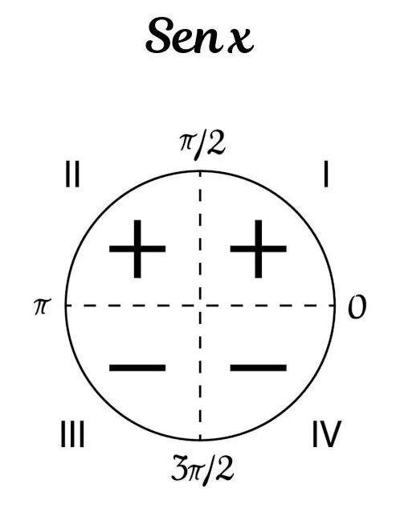
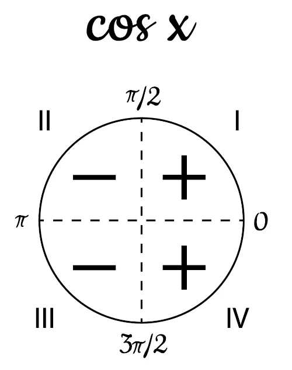
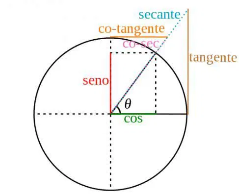

Um arco de circunferência é qualquer porção de uma circunferência delimitada por dois pontos. Esses pontos são chamados de extremidades do arco.
O comprimento do arco e sua medida em radianos são calculados por:
C = 2πrl = rθ (onde θ está em radianos)θ (rad) = (θ° × π) / 180O radiano é uma unidade de medida de ângulos baseada no raio da circunferência. Um arco correspondente a um ângulo de 1 radiano tem um comprimento igual ao raio da circunferência.
Se o raio de uma circunferência é 10 cm e o arco mede 60°, o comprimento do arco será:
Primeiro, convertemos 60° para radianos:
θ = (60 × π) / 180 = π/3 radianos
Agora, aplicamos na fórmula do comprimento do arco:
l = 10 × (π/3) = (10π/3) cm ≈ 10,47 cm
O conceito de arco de circunferência é fundamental para cálculos geométricos e trigonométricos. A conversão entre graus e radianos e o uso das fórmulas para comprimento do arco são essenciais para a resolução de problemas envolvendo circunferências.
A trigonometria estuda as relações entre os ângulos e os lados de um triângulo retângulo.
As funções trigonométricas básicas são:
sen θ = cateto oposto / hipotenusacos θ = cateto adjacente / hipotenusatg θ = cateto oposto / cateto adjacenteAlém de seno, cosseno e tangente, temos as funções recíprocas:
cotg θ = 1 / tg θ = cateto adjacente / cateto opostosec θ = 1 / cos θ = hipotenusa / cateto adjacentecosec θ = 1 / sen θ = hipotenusa / cateto opostoO Teorema de Pitágoras estabelece que, em um triângulo retângulo:
hipotenusa² = cateto₁² + cateto₂²
As identidades trigonométricas fundamentais são:
sen² θ + cos² θ = 11 + tg² θ = sec² θ1 + cotg² θ = cosec² θ| Ângulo | Sen | Cos | Tg | Cotg | Sec | Cosec |
|---|---|---|---|---|---|---|
| 30° | 1/2 | √3/2 | √3/3 | √3 | 2/√3 | 2 |
| 45° | √2/2 | √2/2 | 1 | 1 | √2 | √2 |
| 60° | √3/2 | 1/2 | √3 | √3/3 | 2 | 2/√3 |
θ (rad) = (θ° × π) / 180θ (graus) = (θ (rad) × 180) / πA relação entre os lados e os ângulos de qualquer triângulo:
a / sen A = b / sen B = c / sen C
Usada para encontrar lados ou ângulos de triângulos que não são retângulos:
c² = a² + b² - 2ab cos C
Dois arcos trigonométricos são chamados de congruentes quando possuem a mesma posição no círculo trigonométrico, ou seja, diferem por um número inteiro de voltas completas.
Um arco α é congruente a outro arco se:
α + k × 360°α + k × 2πOnde k é um número inteiro.
30°, 390°, -330°, 750°, -690°...
π/4, 9π/4, -7π/4, 17π/4...
Se um arco for maior que 360° ou menor que 0°, basta somar ou subtrair múltiplos de 360° até que ele fique dentro desse intervalo.
890° - 2 × 360° = 170° → Arco congruente: 170°
-200° + 360° = 160° → Arco congruente: 160°
O mesmo processo pode ser aplicado em radianos, somando ou subtraindo múltiplos de 2π.
13π/4 - 2π = 5π/4 → Arco congruente: 5π/4
-3π/2 + 2π = π/2 → Arco congruente: π/2
A função seno é uma função trigonométrica fundamental que descreve uma relação entre um ângulo de um triângulo retângulo e as razões entre seus lados. Ela é amplamente utilizada na matemática, física e engenharia.
A função seno é definida como:
y = sen(x)
Isso significa que para cada valor de x, o seno retorna um valor correspondente baseado na posição de um ponto no círculo unitário.
sen(0) = 0sen(π/2) = 1sen(π) = 0sen(3π/2) = -1sen(2π) = 0A função seno apresenta um comportamento ondulatório, oscilando entre -1 e 1, passando pelos valores notáveis mencionados acima.
A função cosseno é uma função trigonométrica fundamental definida como:
y = cos(x)
Ela relaciona um ângulo de um triângulo retângulo com a razão entre o cateto adjacente e a hipotenusa.
cos(0) = 1cos(π/2) = 0cos(π) = -1cos(3π/2) = 0cos(2π) = 1π/2 para a esquerda.Assim como a função seno, o cosseno tem um comportamento ondulatório, oscilando entre -1 e 1.
A função tangente é uma função trigonométrica definida como:
tg(x) = tan(x) = sin(x) / cos(x)
Ou seja, a tangente de um ângulo é a razão entre o seno e o cosseno desse ângulo.
tan(0) = 0tan(π/4) = 1tan(π/2) é indefinido (assíntota vertical)tan(π) = 0tan(3π/4) = -1tan(2π) = 0O gráfico da função tangente tem um comportamento cíclico, com assíntotas verticais onde o cosseno se anula e a tangente vai para ±∞. A tangente cruza o eixo y (ou x = 0) em 0 e se repete a cada π unidades.
A tangente é semelhante ao seno, mas com um comportamento mais "agudo" e com assíntotas verticais. A cada π unidades, o gráfico passa por uma assimptota vertical, indo de ∞ a -∞.
A tangente está relacionada com o círculo trigonométrico de forma que, para um determinado ângulo x, o valor de tan(x) pode ser interpretado como a razão entre as coordenadas y/x de um ponto na circunferência. Em outras palavras, o valor da tangente é dado pela altura do ponto no círculo dividido pela sua coordenada horizontal.
Calcule o comprimento de um arco de circunferência de raio 5 cm e ângulo central de 45°.
Resolução:
Primeiro, convertemos 45° para radianos:
θ = (45 × π) / 180 = π/4 radianos
Agora, aplicamos na fórmula do comprimento do arco:
l = rθ = 5 × (π/4) = (5π/4) cm ≈ 3,93 cm
Resposta: O comprimento do arco é aproximadamente 3,93 cm.
Determine o ângulo central em radianos de um arco de comprimento 8 cm em uma circunferência de raio 4 cm.
Resolução:
Usamos a fórmula do comprimento do arco:
l = rθ
Substituímos os valores conhecidos:
8 = 4θ
Resolvendo para θ:
θ = 8 / 4 = 2 radianos
Resposta: O ângulo central é 2 radianos.
Converta 120° para radianos.
Resolução:
Usamos a fórmula de conversão:
θ (rad) = (θ° × π) / 180
Substituímos 120°:
θ = (120 × π) / 180 = 2π/3 radianos
Resposta: 120° é igual a 2π/3 radianos.
Se o comprimento de uma circunferência é 20π cm, qual é o raio da circunferência?
Resolução:
Usamos a fórmula do comprimento da circunferência:
C = 2πr
Substituímos o comprimento conhecido:
20π = 2πr
Resolvendo para r:
r = 20π / 2π = 10 cm
Resposta: O raio da circunferência é 10 cm.
Calcule o comprimento de um arco de circunferência de raio 7 cm e ângulo central de 90°.
Resolução:
Primeiro, convertemos 90° para radianos:
θ = (90 × π) / 180 = π/2 radianos
Agora, aplicamos na fórmula do comprimento do arco:
l = rθ = 7 × (π/2) = (7π/2) cm ≈ 11 cm
Resposta: O comprimento do arco é aproximadamente 11 cm.
Calcule o valor de sen(π/6).
Resolução:
Usamos a tabela de valores trigonométricos notáveis:
sen(π/6) = 1/2
Resposta: sen(π/6) = 1/2
Determine o valor de cos(π/3).
Resolução:
Usamos a tabela de valores trigonométricos notáveis:
cos(π/3) = 1/2
Resposta: cos(π/3) = 1/2
Calcule o valor de tg(π/4).
Resolução:
Usamos a tabela de valores trigonométricos notáveis:
tg(π/4) = 1
Resposta: tg(π/4) = 1
Determine o valor de sec(π/6).
Resolução:
Usamos a relação sec(θ) = 1/cos(θ):
sec(π/6) = 1/cos(π/6) = 2/√3
Resposta: sec(π/6) = 2/√3
Calcule o valor de cosec(π/3).
Resolução:
Usamos a relação cosec(θ) = 1/sen(θ):
cosec(π/3) = 1/sen(π/3) = 2/√3
Resposta: cosec(π/3) = 2/√3